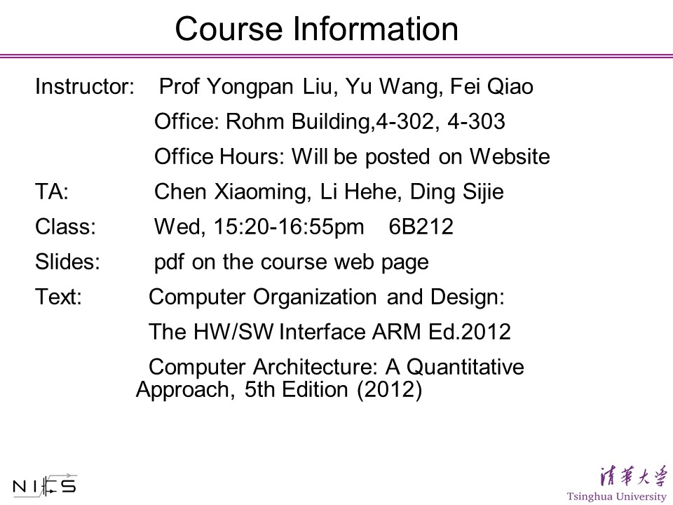
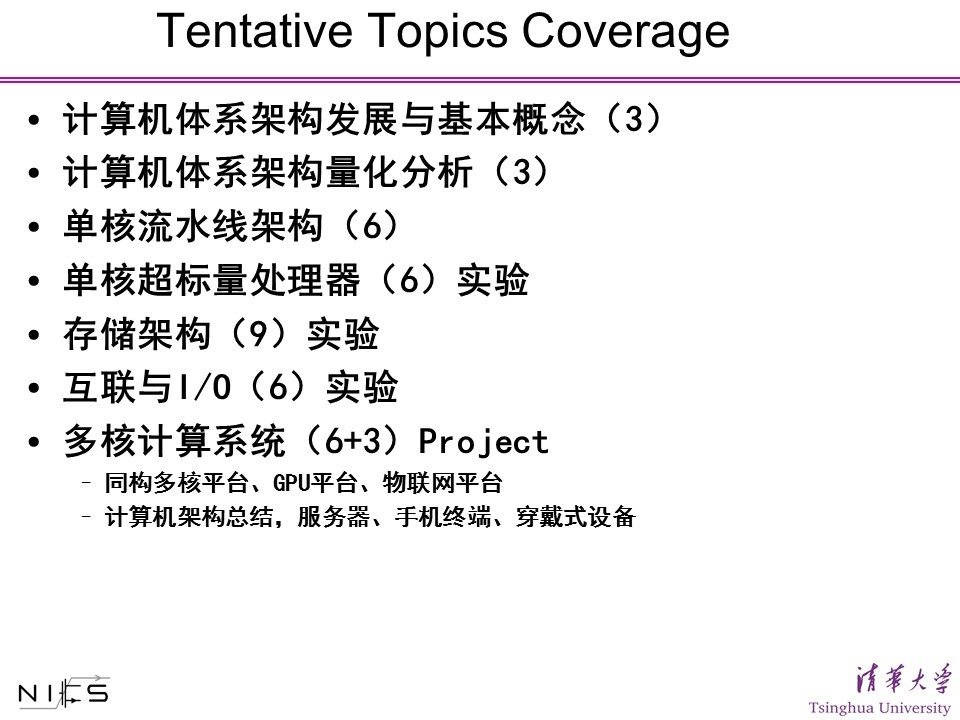
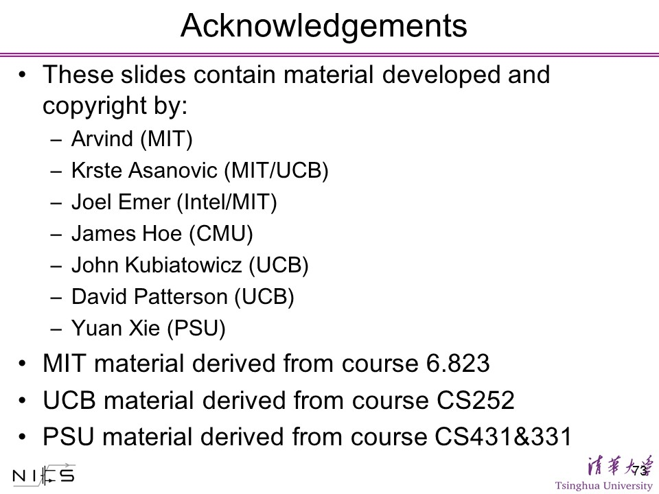

| [2014 Spring] | ||
|
�峇�柴麻字悶狼尺更 Modern Computer Architecture |
||
| [Overview] - [People] - [Acknowledgements] | ||
|
|
||
| [Overview] | ||
|  |  | |
| Fei Qiao is
responsible for the memory hierarchy, interconnection and IO systems.
Mr. Sijie Ding, as Fei Qiao's TA, is responsible for the OpenCL experiments for image signal processing applications on heterogeneous architectures of GPU+CPU processing units. |
||
| [People] | ||
| Assoc. Prof. Yongpan Liu, Yu Wang and Fei Qiao | ||
| Acknowledgements | ||
|  | ||
|
Copyright © 2014 Fei Qiao, Tsinghua University, Beijing, P.R.C. All rights reserved Last Update : 2015-01-19 |
||